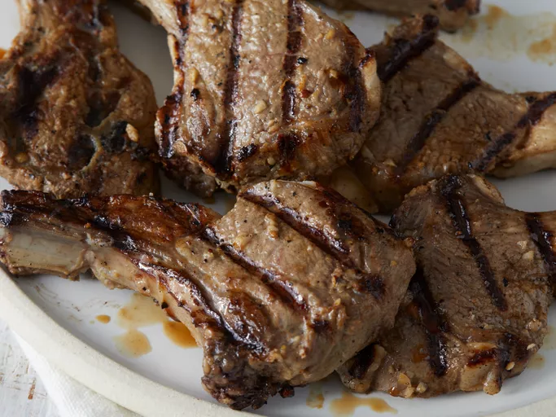

These grilled lamb chops are easy to prepare with a tasty garlicky marinade for flavorsome, juicy results.
Before they’re grilled, the lamb chops are marinated in a flavorful blend of:
- Onion
- White vinegar
- Garlic
- Salt
- Black pepper
- Make the marinade.
- Marinate the lamb chops in the refrigerator for at least two hours.
- Wrap the exposed ends in foil, then cook on the preheated grill.
- Grilling lamb chops is a relatively quick process: Simply grill each side for about 3 minutes each for medium doneness. You can grill them longer if you prefer your meat well done. An instant-read thermometer inserted into the center should read at least 130 degrees F.